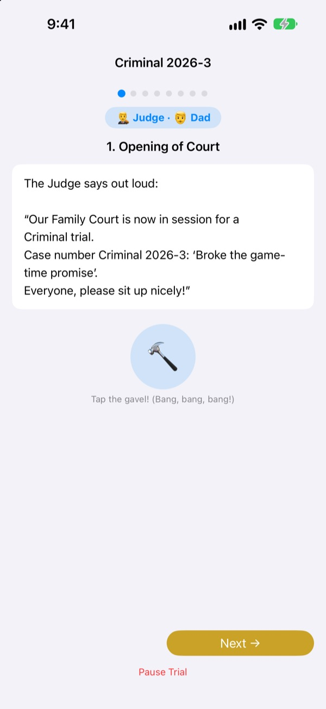
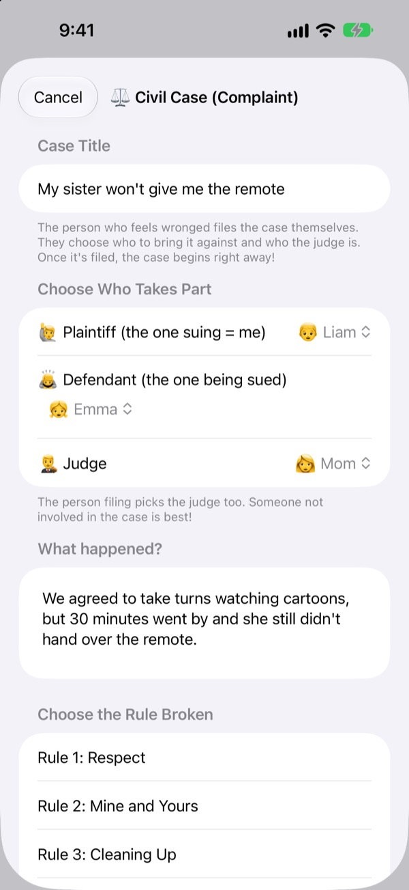
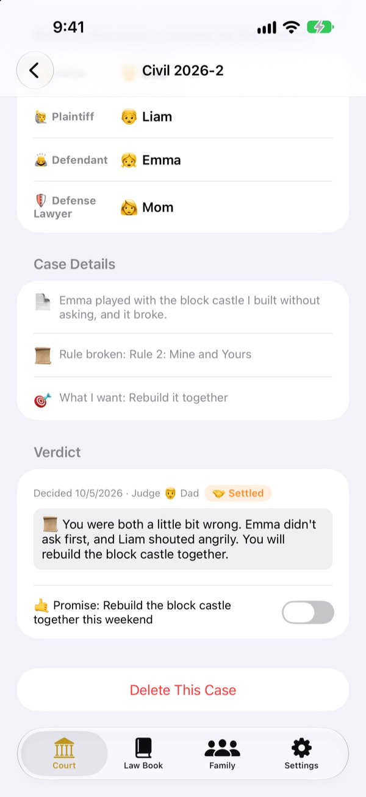
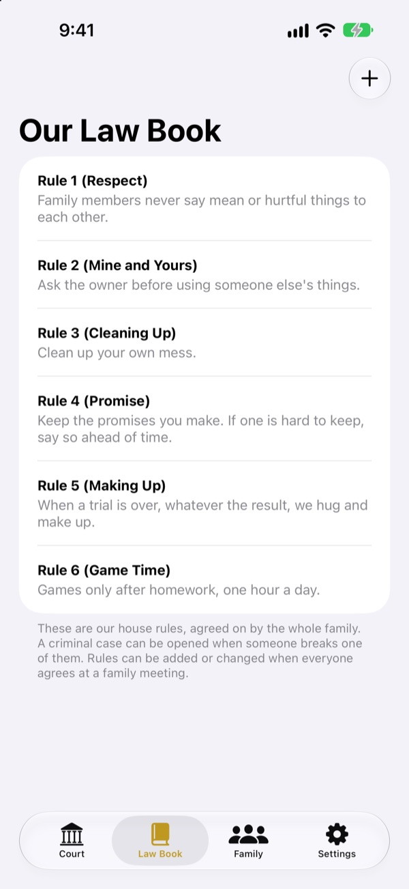

Something unfair?
Settle it in court, not tears.
Your child files the case as plaintiff, and the family splits the roles of judge and counsel. A script tells everyone whose turn it is and what to say, so even the first trial runs like the real thing.
No ads, no purchases, no sign-up. Records stay on this device.

Hold a trial
Run a quick case: “My brother won't give me the remote.” Switch the word level at the top, strike the gavel and start the timer. It makes sound, so check your volume.
“They started it!” Tired of being the one who always decides?
When a fight breaks out, a grown-up usually hands down the ruling. The loser cries that it's unfair, and the winner never quite knows why they won. Family Court gives kids an order to follow: tell your whole side, then hear the other side all the way through. And the verdict ends with a promise, not just a punishment.
The one who feels wronged files the case
Whoever feels something was unfair becomes the plaintiff and files the complaint. They choose who the case is against and who will be the judge. Kids can even file against Mom and Dad.
Saw a house rule broken? Become the prosecutor and bring a criminal case. Only someone who isn't the plaintiff or the defendant can be the judge.

Verdicts end with a promise
Along with the verdict, set a promise or penalty and tick it off once it's kept. Finished cases become your family's past cases.
Suggested penalties start with making things right and mending feelings, closer to repair than punishment. Cutting games or TV comes last.

Your house, your laws
Write down the rules your family agrees on, such as respect, tidying up and keeping promises, and add or change them any time. A complaint names the law that was broken.
Learn about Court explains what judges, plaintiffs, prosecutors and defense lawyers do, and how a trial runs.

Three steps to start
- 1
Add your family
A name and an emoji is all it takes. No account needed.
- 2
File a case
Civil if something's unfair, criminal if a house rule was broken. Then pick a judge.
- 3
Open the trial
Follow the script, keep time with the timer and announce the verdict with the gavel.
Words that grow with your child
- Judge
- Simple: Referee · Courtroom: Presiding Judge
- Plaintiff
- Simple: Upset One · Courtroom: Plaintiff
- Defendant
- Simple: Answerer · Courtroom: Defendant
- Prosecutor
- Simple: Rule Spotter · Courtroom: Prosecutor
- Defendant
- Simple: Answerer · Courtroom: Defendant
- Defense Lawyer
- Simple: Helper · Courtroom: Defense Lawyer
- Civil
- Simple: Not Fair · Courtroom: Civil
- Criminal
- Simple: Broken Promise · Courtroom: Criminal
Pick a Word Level in Settings and the words on screen and in the script all change together. Try Simple for preschoolers and Standard for school-age kids.
Questions
What age is it for?
Any child who can read can play along with a parent. With the script, the prompts and the word level set to Simple, younger kids can join in while a grown-up reads aloud.
Is it really free?
Yes. No ads and no purchases that unlock features. Settings has an optional tip to support the developer, but it doesn't unlock or lock anything.
Does it need the internet?
No. Trials and records all work offline. You only need the internet and an iCloud sign-in to send feedback from Settings.
Where are my records stored?
Family members, laws, trials and verdicts are saved only on your device and never sent to a server. All that reaches the developer is feedback you choose to send and anonymous usage statistics that can't identify you.
Can I back up or move my records?
Use Save Records in Settings to export everything to a file, then Load Records on the other device to restore it as it was. Backups exported from the old web version load too.
Does it work on iPad?
Yes, on both iPhone and iPad. A big screen is great for the whole family gathered round.
What if the penalties get too harsh?
When the prosecutor asks for a penalty, the script reminds everyone to keep it light and doable. Suggested penalties start with repairing things: making it right, mending feelings, seeing it from the other side.
How do I delete everything?
Deleting the app removes every record on the device. Nothing ever left it, so nothing is kept anywhere else. To delete feedback you sent, just email us.
Bugs, ideas or anything else, write to leeo@kakao.com. You can also use Send Feedback in the app's Settings.